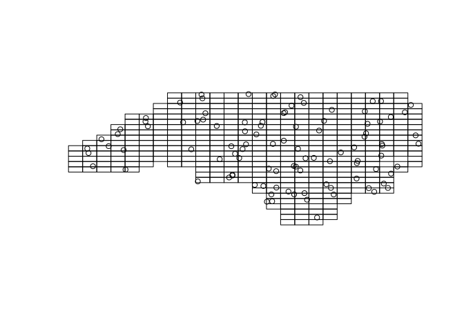
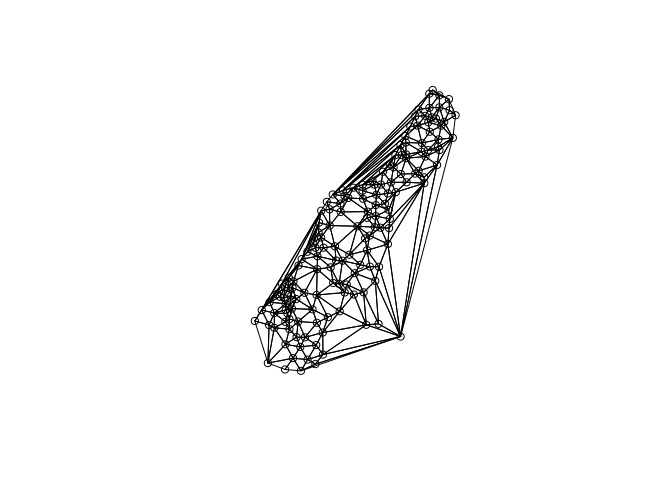
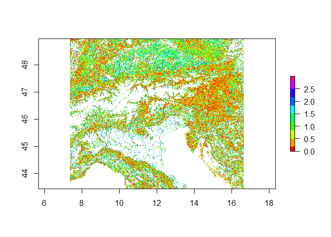

Spatial manipulations
The R Script associated with this page is available here. Download this file and open it (or copy-paste into a new script) with RStudio if you want to follow along.
1 Vector manipulations
As mentioned in the lecture, vector files can be manipulated in a number of way with regards to their geometry. Examples include for instance combining, dissolving or splitting geometries. A full list of methods can be queried via methods(class = "sf") and looked up via ?sf_combine and similar
library(dplyr)
library(sf)
# Load the example shapefile provided as part of the sf package
nc = st_read(system.file("shape/nc.shp", package="sf"))## Reading layer `nc' from data source `C:\Users\Martin\Documents\R\win-library\4.0\sf\shape\nc.shp' using driver `ESRI Shapefile'
## Simple feature collection with 100 features and 14 fields
## geometry type: MULTIPOLYGON
## dimension: XY
## bbox: xmin: -84.32385 ymin: 33.88199 xmax: -75.45698 ymax: 36.58965
## geographic CRS: NAD27# 100 Features in here
# nrow(nc)
# Combine all features
nc1 <- nc %>% st_union()
# Get boundary of the unified polygon
nc2 <- nc1 %>% st_boundary()
# Simplify the boundaries
nc3 <- st_simplify(nc2,dTolerance = 0.1)## Warning in st_simplify.sfc(nc2, dTolerance = 0.1): st_simplify does not
## correctly simplify longitude/latitude data, dTolerance needs to be in decimal
## degrees# Calculate centroids of each polygon and transform them to a pseudo-mercator
nc4 <- nc %>%
st_centroid() %>%
st_transform("+init=epsg:3857")## Warning in st_centroid.sf(.): st_centroid assumes attributes are constant over
## geometries of x## Warning in st_centroid.sfc(st_geometry(x), of_largest_polygon =
## of_largest_polygon): st_centroid does not give correct centroids for longitude/
## latitude data## Warning in CPL_crs_from_input(x): GDAL Message 1: +init=epsg:XXXX syntax is
## deprecated. It might return a CRS with a non-EPSG compliant axis order.# Finally buffer each point by ~1000m
# NOTE: For this to work correctly the projection should be meter based!
nc5 <- st_buffer(nc4, 1000)
# Note how attributes are maintained
nc5# Try and plot some of the created new objects aboveIt is also easily possible to create new datasets based on existing geometries.
# Make a grid overall features
x1 <- st_make_grid(nc, n = c(25,25))## although coordinates are longitude/latitude, st_relate_pattern assumes that they are planar# Sample 100 points with the grid
x2 <- st_sample(x1, 100)## although coordinates are longitude/latitude, st_intersects assumes that they are planar## although coordinates are longitude/latitude, st_intersects assumes that they are planarplot(x1)
plot(x2,add=TRUE)
Take the laxenburg polygon from the vector session, project and buffer the polygon by 10.000m (10km).
# Get the data
laxpol <- st_read('Laxenburg.gpkg') %>%
st_transform("+init=epsg:3857") %>%
st_buffer(10000)
plot(laxpol)Here we use mainly the ´sf´ package and its functionalities for manipulating vector data geometries. More and other tools are available in the ´rgeos´ package, which however only works with ´sp´ objects and can be quite tedious.
library(rgeos)## rgeos version: 0.5-3, (SVN revision 634)
## GEOS runtime version: 3.8.0-CAPI-1.13.1
## Linking to sp version: 1.4-2
## Polygon checking: TRUElibrary(sp)
# Load the Meuse river data points
data(meuse)
coordinates(meuse) <- c("x", "y")
# Create a delaunay triangulation between all points
plot(gDelaunayTriangulation(meuse))
points(meuse)
For a list of functions provided by the geos library, call lsf.str("package:rgeos",pattern = 'g') and pay attention to functions starting with ’g*’.
2 Raster manipulations
Raster data can manipulated in a number of ways, which is often necessary for subsequent analyses. For instance when several input layers differ in spatial extent, resolution or projection from another.
Here are some examples how to manipulate raster data directly.
library(raster)
ras <- raster('ht_004_clipped.tif',band = 1)
ras <- setMinMax(ras)
# Aggregate the raster by a factor of 5 (too 5000m resolution)
forest <- aggregate(ras, fact = 5)
# Get all values with 95% forest cover
forest[forest <= 950] <- NA
# And those above as
forest[forest >= 950] <- 1
# Get the cells bordering those forest grid cells
forest <- boundaries(forest,type = 'outer')
plot(forest)
Can you calculate the area in km² of grid cells with more than 95% forest area?
# Get all values with 95% forest cover
ras[ras <= 950] <- NA
# And those above as
ras[ras >= 950] <- 1
# Calculate the area in km2
ar <- area(ras)
# Multiple the result with the forest area
ar <- ras * ar
# The area in km2
cellStats(ar,'sum')2.1 Applying functions to raster stacks
One functionality that is commonly needed is to apply arithmetric calculations or custom functions to stacks of raster images.
library(raster)
# Lets load the raster stack
ras <- stack('ht_004_clipped.tif')
# Assume we want to log10 transform all layers
ras <- calc(ras, fun = log10)
# Instead of a base R function, it is also possible to supply a custom R function.
myfunc <- function(x){ abs( x[2] - x[1] ) } # Calculate the absolute difference of the layers 2 and 1
ras <- calc(ras, fun = myfunc)
# Note that the result is not a rasterStack object anymore, but instead a single rasterLayer
plot(ras, col = rainbow(10))
Note that this is run on a single core. To run this code in parallel, have a look at the mclapply function from the parallel package.